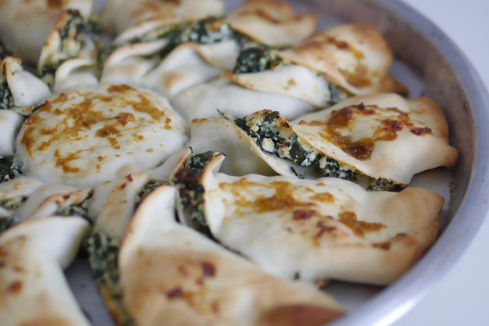

Ésta receta no solo es rica de comer, sino es rica de ver. Si, señor, señora visitante de ésta hermosa web: Es una tarta en forma de estrella. Así como lee. Hacer tartas vegetarianas es una solución fácil para no dejar a tu amigo vegeta con hambre, y encima hasta económicas.
Ingredientes:
- 2 tapas de tarta
- 250g. de ricota
- 50g. de queso rallado
- 25g. de queso parmesano
- 1/2 diente de ajo
- 1 atado de espinaca
- 6 hongos secos de pino
- Sal
- Pimienta
- Nuez moscada
- Aceite de oliva
- Mostaza
- Azúcar
Paso a paso de ésta receta:
Primero vamos a mezclar la ricota con el ajo picado y con el queso rallado. Lavamos la espinaca y la colocamos en una bolsa de plástico, cerramos la bolsa y con una tijera le hacemos dos agujeritos. Luego la llevamos al microondas por 3 minutos aprox. Al sacarla vamos a ver que está bien cocida. Una vez que se entibia, vamos a escurrirla bien y a picarla. En un vaso o taza con agua, vamos a poner en remojo unos hongos de pino para que se hidraten. Los dejamos un rato y una vez que estén, los escurrimos y picamos al igual que la espinaca. Mientras, en un bol vamos a mezclar la espinaca picada con nuestra mezcla de ricota, ajo y queso rallado, hasta que esté bien integrada. Una vez lista la mezcla agregamos los hongos. Condimentamos con la nuez moscada, la sal y la pimienta.
Armado
En un molde para tarta de diámetro mayor al de nuestra masa vamos a estirar ésta y por encima vamos a untar la mezla de espinaca, ricota y hongos. Por encima vamos a tapar con la otra tapa de masa. Agarramos un vaso y apoyamos la circunferencia del borde en el centro de nuestra tarta. Vamos a presionar no muy exageradamente sobre la tarta formando un círculo en el centro. Vamos a dejar el vaso ahí y a agarrar un cuchillo liso para comenzar a hacer unos cortes en nuestra tarta desde el vaso hasta el borde, dejando el espacio de una porción de pizza entre borde y borde. Luego llevamos a tomar cada una de estas porciones y vamos a retorcerlas sobre sí mismas formando una especie de espiral y así, una vez que hayan terminado con todas, se va a formar nuestra estrella. Una vez que terminaron con las porciones, retiral el vaso del centro.
Salsita
En un bol pequeño, vamos a colocar un chorrito de aceite, una cucharadita de mostaza y un poquito de azúcar. Lo mezclamos bien y con eso, pintamos por encima la tarta. Ahora sí, lo que queda es llevar la tarta a horno 180° hasta que la vean doradita.